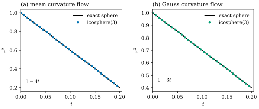
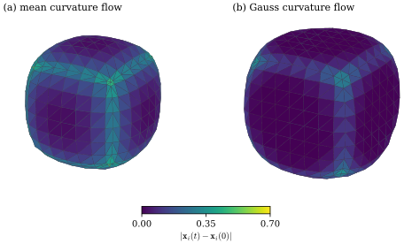
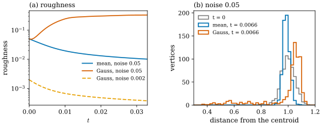
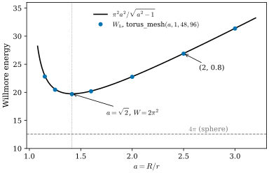

41.5 Curvature Flows on Surfaces
Goals
- energy의 gradient flow로 surface를 움직이는 일반 틀을 smooth(\(L^2\) gradient)와 discrete(mass matrix로 나눈 vertex gradient)로 쓰고, explicit Euler step의 stiffness를 설명할 수 있다.
- 부피, 넓이, total mean curvature의 gradient flow가 각각 normal flow, mean curvature flow, Gauss curvature flow라는 것을 Section 41.2의 gradient로 유도하고, sphere의 정확한 해와 mesh의 결과를 비교할 수 있다.
- gradient flow라는 것만으로는 매끄럽게 하는 flow가 되지 않는다는 것을 Gauss curvature flow의 예로 설명할 수 있다.
- Willmore energy \(\int H^2\,dA\)의 성질(scale 불변, \(W \ge 4\pi\), Gauss–Bonnet과의 관계)을 증명하고, 그 gradient의 부호를 torus에서 확인할 수 있다.
Prerequisites
- Section 41.2: smooth first variation Proposition 41.2.1과 discrete gradient Theorem 41.2.4, Theorem 41.2.7, Theorem 41.2.11.
- Section 37.6: gradient flow Definition 37.6.1, energy의 감소 Proposition 37.6.2, explicit step의 안정성 Proposition 37.6.5.
- Chapter 40: curvature normal Definition 40.3.3, Definition 40.3.9, parallel surface의 넓이 Proposition 40.4.1.
Motivation
Section 41.4까지는 mesh를 고정해 놓고 curvature를 재고 그 정확도를 따졌다. 이 절은 그 curvature로 mesh를 움직인다. scan이나 reconstruction에서 얻은 mesh에는 잡음이 있다. 튀어나온 vertex는 들이고 팬 vertex는 내밀어, 곧 vertex를 curvature에 따라 normal 방향으로 조금씩 옮기기를 되풀이하면 잡음이 줄 것 같다 [CMU-DDG L17] slide 32. 그러나 이 처방만으로는 어떤 curvature를, 어느 쪽으로, 얼마나 빨리 쓸지가 정해지지 않는다. variational 관점이 그것을 정해 준다. 줄이고 싶은 energy를 먼저 고르면 그 gradient가 방향과 속력을 준다(slide 33).
Section 41.2는 이 장의 핵심 사슬을 주었다. 부피의 gradient는 normal, 넓이의 gradient는 mean curvature normal, total mean curvature의 gradient는 Gauss curvature normal, total Gaussian curvature의 gradient는 \(0\)이다. 사슬의 각 고리가 하나의 flow다. Section 37.6이 curve에서 한 일(gradient flow, time step, stiffness)을 surface에서 되풀이하되, gradient는 Section 41.2에서 이미 계산해 두었다. 이 절에서 새로 보는 것은 셋이다. sphere 같은 정확한 해와 mesh의 비교, energy를 줄여도 매끄러워지지 않는 flow, 그리고 넓이 대신 굽힘을 벌하는 Willmore energy다.
Gradient Flows of Geometric Energies
smooth closed surface의 energy \(E\)가 모든 variation \(\delta\mathbf{x}\)에서 \(\delta E = \int_S\inner{\mathbf{G}}{\delta\mathbf{x}}\,dA\)를 만족하면 \(\mathbf{G}\)를 \(E\)의 \(L^2\) gradient라 하고 \(\grad E\)로 쓴다. Proposition 41.2.1이 네 energy의 \(L^2\) gradient를 주었다. 부피 \(V\)는 \(\mathbf{N}\), 넓이 \(A\)는 \(-2H\mathbf{N}\), \(\int H\,dA\)는 \(-K\mathbf{N}\), \(\int K\,dA\)는 \(0\)이다(가운데 둘은 normal 방향의 variation에서). mesh에서는 vertex 위치의 함수 \(E(\mathbf{x}_1, \dots, \mathbf{x}_{n_0})\)의 gradient \(\nabla_{\mathbf{x}_i}E\)를 쓴다. 두 gradient flow는 다음과 같다.
\(A_i\)는 vertex \(i\)의 mixed area다. 둘째 식은 Definition 37.6.1의 gradient flow에서 \(M = \diag(A_1, \dots, A_{n_0})\)(세 좌표에 같은 값)으로 둔 것이다. 왜 \(A_i\)로 나누는가? Section 41.2의 discrete gradient는 dual cell 위에서 적분한 양이다. 예를 들어 \(\nabla_{\mathbf{x}_i}A = -(L\mathbf{x})_i \approx -2H\mathbf{N}A_i\)이다. \(A_i\)로 나누어야 점마다의 양 \(-2H\mathbf{N}\)이 되고, flow의 속도가 mesh의 촘촘함과 무관해진다. 나누지 않으면(\(M = I\)) cell이 두 배인 vertex가 두 배 빨리 움직인다. 그래도 energy는 줄지만(Proposition 37.6.2는 어떤 \(M\)에서도 성립한다), 근사하는 smooth flow가 \(\partial_t\mathbf{x} = -\grad E\)가 아니다.
어느 쪽이든 energy는 flow를 따라 준다. smooth에서는 \(\tfrac{d}{dt}E = \int\inner{\grad E}{\partial_t\mathbf{x}}\,dA = -\int\abs{\grad E}^2\,dA\), discrete에서는 \(\tfrac{d}{dt}E = -\sum_i\abs{\nabla_{\mathbf{x}_i}E}^2/A_i\)이다. 슬라이드처럼 시간 미분을 차분으로 바꾸고 지금 시각의 gradient를 쓰면 explicit(forward) Euler step이 된다(slide 34). time step을 \(h\)라 하면
이다. Proposition 37.6.5에 따르면 energy가 \(\tfrac12\mathbf{x}^{\mathsf T}B\mathbf{x}\) 꼴일 때 이 step은 \(h\lambda_{\max} \le 2\)일 때만 bounded이고, \(\lambda_{\max}\)는 \(M^{-1}B\)의 가장 큰 eigenvalue다(그 명제의 행렬 \(K\)를 이 절에서는 Gaussian curvature와 구별하려고 \(B\)로 쓴다). 넓이에서는 \(B = -L\)을 지금의 mesh에서 고정한 것이 그 모형이고(Example 41.2.8(c)), \(\lambda_{\max}\)는 평균 edge 길이 \(\bar\ell\)의 제곱에 반비례한다(icosphere에서 \(\lambda_{\max}\bar\ell^2 \approx 7\), Example 42.6.5). 이것이 stiffness다. mesh를 한 번 세분하면 \(h\)를 \(\tfrac14\)로 줄여야 하고, 같은 시각까지 4배의 step이 든다.
Normal Flow
사슬의 첫 고리는 부피다. \(\grad V = \mathbf{N}\)이므로 부피의 gradient flow는 \(\partial_t\mathbf{x} = -\mathbf{N}\), 곧 모든 점이 단위 속력으로 안쪽으로 움직이는 flow다. 이것을 normal flow(법선 흐름)라 부르자. 시각 \(t\)의 surface는 처음 surface의 parallel surface다.
Proposition 41.5.1 (normal flow is the inward offset). 영역 \(\Omega\)를 둘러싼 compact surface \(S\)의 바깥쪽 normal을 \(\mathbf{N}\)이라 하고, \(t\)가 모든 점에서 \(t\abs{\kappa_i} \lt 1\)을 만족할 만큼 작다고 하자. 그러면 \(\mathbf{x}_t = \mathbf{x} - t\mathbf{N}\)은 \(\partial_t\mathbf{x}_t = -\mathbf{N}_t\)를 만족하고(\(\mathbf{N}_t\)는 \(\mathbf{x}_t\)의 Gauss map), 넓이와 부피는
이다.
Proof. Proposition 40.4.1을 \(\varepsilon = -t\)로 쓰면 \(\mathbf{x}_t\)는 immersion이고 그 Gauss map은 \(\mathbf{N}\)이다. 곧 \(\mathbf{N}_t(p) = \mathbf{N}(p)\)이고 \(\partial_t\mathbf{x}_t = -\mathbf{N} = -\mathbf{N}_t\)이다. 넓이의 식은 (40.4.1)에 \(\varepsilon = -t\)를 넣은 것이다. 부피는 \(\tfrac{d}{dt}V(t) = \int\inner{\mathbf{N}_t}{\partial_t\mathbf{x}_t}\,dA_t = -A(t)\)((41.2.1)의 첫 식)이므로 넓이의 식을 적분하면 된다.
반지름 \(r_0\)인 sphere는 \(r = r_0 - t\)로 줄고, \(H = -1/r_0\), \(K = 1/r_0^2\)를 넣으면 (41.5.3)은 \(4\pi(r_0 - t)^2\)과 \(\tfrac43\pi(r_0 - t)^3\)이다. 이 식은 Proposition 40.4.2의 Steiner formula를 안쪽으로 쓴 것이기도 하다. mesh에서는 \(\nabla_{\mathbf{x}_i}V\)가 vector area \(\mathbf{A}_i\)이므로(Theorem 41.2.4) discrete normal flow는 \(\dot{\mathbf{x}}_i = -\mathbf{A}_i/A_i\)이다. 슬라이드의 update \(f_i - \tfrac{\tau}{6}\sum f_j\times f_k\)는 \(\nabla_{f_i}V = \tfrac16\sum_{ijk}f_j\times f_k\)를 빼는 것이라 부호가 맞다(slide 35).
Example 41.5.2 (normal flow on meshes). unit sphere의 icosphere(3)에서 \(h = 10^{-3}\)으로 300 step 가면(\(t = 0.3\)) vertex와 원점 사이 거리의 평균이 \(0.7017\)이다(정확한 값 \(0.7\)). 반면 한 변이 \(2\)인 cube를 face마다 \(8\times8\) 칸으로 나눈 mesh(한 face 안의 대각선은 모두 평행하다)에서는 face 안쪽 vertex가 속력 \(1\)로 \(-\mathbf{N}\) 방향으로 움직이지만, edge 위의 vertex는 \(-\tfrac12(\mathbf{n}_1 + \mathbf{n}_2)\)(속력 \(0.7071\))로, corner는 그 corner를 지나는 대각선의 수에 따라 속력 \(0.5443\) 또는 \(0.7698\)로 움직인다(\(\mathbf{n}_1, \mathbf{n}_2\)는 두 face의 normal). 대각선을 칸마다 아무렇게나 그으면 edge 위의 속력도 vertex마다 \(0.47\)–\(0.94\)로 달라진다. cube를 안쪽으로 \(t\)만큼 offset한 것은 face가 \(t\)만큼 들어간 작은 cube이고, 그러려면 edge의 vertex가 \(-(\mathbf{n}_1 + \mathbf{n}_2)\), corner가 \(-(\mathbf{n}_1 + \mathbf{n}_2 + \mathbf{n}_3)\)로 움직여야 한다. vertex의 normal flow는 polyhedron의 offset이 아니다. offset은 vertex가 아니라 face를 움직인다.
Verification: verify/v-41-5-surface-flows.py
Mean Curvature Flow
Definition 41.5.3 (mean curvature flow). closed surface의 넓이의 gradient flow
를 mean curvature flow(평균곡률 흐름)라 한다. mesh에서는 \(\nabla_{\mathbf{x}_i}A = -(L\mathbf{x})_i\)(Theorem 41.2.7)이므로 discrete mean curvature flow는 \(\dot{\mathbf{x}}_i = (L\mathbf{x})_i/A_i\)이다.
\(H\)와 \(\mathbf{N}\)은 orientation을 바꾸면 함께 부호가 바뀌므로 \(2H\mathbf{N}\)은 orientation에 무관하다. 바깥쪽 \(\mathbf{N}\)의 sphere에서는 \(H = -1/r \lt 0\)이므로 \(2H\mathbf{N}\)이 안쪽을 향한다. \(\Delta\mathbf{x} = 2H\mathbf{N}\)이므로 이 flow는 위치 \(\mathbf{x}\)의 heat equation이고, \((L\mathbf{x})_i/A_i\)는 그 Laplacian을 mass matrix로 나눈 discrete 판이다(Definition 40.3.3).
Proposition 41.5.4 (mean curvature flow decreases area fastest). (a) mean curvature flow에서 \(\tfrac{d}{dt}A = -\int4H^2\,dA\)이다. (b) normal 방향의 속도 \(\partial_t\mathbf{x} = \varphi\mathbf{N}\) 가운데 \(\int\varphi^2\,dA = \int4H^2\,dA\)인 것 중에서 \(\tfrac{d}{dt}A\)가 가장 작은 것은 \(\varphi = 2H\)이다. (c) discrete mean curvature flow에서 \(\tfrac{d}{dt}A = -\sum_i\abs{(L\mathbf{x})_i}^2/A_i\)이다.
Proof. (b) (41.2.1)에서 \(\tfrac{d}{dt}A = -\int2H\varphi\,dA\)이다. Cauchy–Schwarz inequality로 \(\int2H\varphi\,dA\)는 \((\int4H^2\,dA)^{1/2}(\int\varphi^2\,dA)^{1/2}\) 이하이고 이것은 가정에서 \(\int4H^2\,dA\)이다. 등호는 \(\varphi\)가 \(2H\)의 양수배일 때, 곧 \(\varphi = 2H\)일 때다. (a)는 \(\varphi = 2H\)를 넣은 것이다. (c) chain rule로 \(\tfrac{d}{dt}A = \sum_i\inner{\nabla_{\mathbf{x}_i}A}{\dot{\mathbf{x}}_i}\)이고, 여기에 \(\nabla_{\mathbf{x}_i}A = -(L\mathbf{x})_i\)와 \(\dot{\mathbf{x}}_i = (L\mathbf{x})_i/A_i\)를 넣으면 된다.
Example 41.5.5 (spheres and cylinders). 반지름 \(r_0\)인 sphere는 반지름 \(r(t)\)의 sphere로 남고 \(r^2 = r_0^2 - 4t\)로 줄어 \(t = r_0^2/4\)에 한 점이 된다. 넓이는 반지름과 무관한 속도 \(\tfrac{d}{dt}A = -16\pi\)로 준다. 반지름 \(\rho_0\)인 무한 cylinder는 \(\rho^2 = \rho_0^2 - 2t\)로 줄어 \(t = \rho_0^2/2\)에 축이 된다.
Derivation. 대칭 때문에 sphere는 sphere로 남는다고 보자(풀이의 유일성은 PDE의 정리로 받아들인다). 바깥쪽 \(\mathbf{N}\)에서 \(H = -1/r\)이므로 \(\partial_t\mathbf{x} = 2H\mathbf{N}\)의 반지름 성분은 \(r' = -2/r\), 곧 \((r^2)' = -4\)이다. 넓이는 \(A = 4\pi r^2\)이므로 \(A' = 4\pi(r^2)' = -16\pi\)이고, 이것은 \(-\int4H^2\,dA = -4r^{-2}\cdot4\pi r^2\)과 같다. cylinder는 \(H = -1/(2\rho)\)이라 \(\rho' = -1/\rho\)이다.
mesh에서도 그런가? icosphere(3)(vertex 642개)에서 \(h = 6.5\times10^{-4}\)으로 explicit step을 하면 \(r^2\)(\(r\)은 vertex와 무게중심 사이 거리의 평균)이 \(t = 0.2\)까지 \(1 - 4t\)에서 \(1.04\times10^{-3}\) 이상 벗어나지 않는다(Figure 41.5.1(a)). 처음 mesh의 \(\lambda_{\max} = 307.6\)이라 안정 한계는 \(h_c = 2/\lambda_{\max} = 0.0065\)이고, 이 \(h\)는 그 \(0.1\)배다. 넓이는 매 step 준다(아래 Implementation 상자).
Verification: verify/v-41-5-surface-flows.py
Figure 41.5.1의 왼쪽 (a)를 보자. 검은 직선이 정확한 해 \(1 - 4t\)이고, 파란 점이 mesh에서 잰 \(r^2\)이다. 점은 \(t = 0.2\)까지 직선 위에 있다. 차이는 \(r\)이 작아질수록 커지지만 마지막 점(\(t = 0.2002\))에서도 \(0.20024\) 대 \(0.19920\)이다. sphere의 \(r^2\)이 시간에 대해 직선이라는 것, 곧 작은 sphere일수록 반지름이 빨리 준다는 것이 mesh에서도 그대로 보인다. 오른쪽 (b)는 아래의 Gauss curvature flow다.

Example 41.5.6 (the cube under mean curvature flow). Example 41.5.2의 cube mesh(한 변이 \(2\), face마다 \(8\times8\) 칸, 칸마다 triangle 두 개)에서 \(t = 0\)의 속도를 보자. face 안쪽의 vertex는 star가 평면에 있으므로 \((L\mathbf{x})_i = 0\)이다(Proposition 36.6.11(b)의 linear precision). 움직이는 것은 edge와 corner의 vertex뿐이고, 그 속력은 격자 한 칸의 길이를 \(\ell = 2/n\)(여기서 \(n = 8\))이라 할 때 edge에서 \(\sqrt2/\ell\), corner에서 \(4/(\sqrt3\,\ell)\)이다(Exercise 41.5.5의 계산). \(h = 0.1/32 \approx 0.2h_c\)로 \(t = 0.1\)까지 가면 corner가 \(0.705\), edge 위의 vertex가 최대 \(0.478\) 움직이고, face의 중심은 \(0.017\)만 움직인다. 넓이는 \(24\)에서 \(14.76\), 부피는 \(8\)에서 \(5.14\)가 된다(Figure 41.5.2(a)).
Verification: verify/v-41-5-surface-flows.py
edge의 속력이 \(1/\ell\)에 비례한다는 것은 mesh를 촘촘하게 할수록 edge가 더 빨리 둥글어진다는 뜻이다. smooth 관점에서 보면 cube의 edge는 mean curvature가 무한대인 곳이라, smooth mean curvature flow는 처음 순간에 edge를 둥글게 만든다. mesh의 flow는 그 순간을 \(\ell\)의 크기로 흐리게 본 것이고, 그래서 처음 얼마 동안의 모양은 mesh에 따라 다르다. 같은 이유로 cube의 \(\int4H^2\,dA\)는 무한대이고, discrete 판도 \(\ell \to 0\)에서 발산한다(Example 41.5.14).
Gauss Curvature Flow
사슬의 셋째 고리는 total mean curvature다. \(\grad\int H\,dA = -K\mathbf{N}\)이므로 \(\int H\,dA\)의 gradient flow는 \(+K\mathbf{N}\)이고, 바깥쪽 normal의 sphere를 키운다. 줄이는 쪽은 \(E = -\int H\,dA\)의 flow다. 바깥쪽 normal에서 convex surface는 \(H \lt 0\)이라 이 \(E\)가 양수이고, 슬라이드는 Crane의 \(H\)(이 study set의 \(-H\))로 같은 energy를 \(\int H\,dA\)라 적는다(slide 38).
Definition 41.5.7 (Gauss curvature flow). oriented closed surface에서 \(E = -\int H\,dA\)의 gradient flow
를 Gauss curvature flow(가우스 곡률 흐름)라 한다. mesh에서는 \(E\)의 discrete 판이 \(-\mathcal{H} = \tfrac12\sum\ell_{ij}\theta_{ij}\)이고 그 gradient가 \((K\mathbf{N})_i\)이므로(Theorem 41.2.11) discrete Gauss curvature flow는 \(\dot{\mathbf{x}}_i = -(K\mathbf{N})_i/A_i\)이다.
mean curvature flow와 달리 이 flow는 orientation에 의존한다. \(K\)는 orientation에 무관하고 \(\mathbf{N}\)만 부호가 바뀌므로, normal을 뒤집으면 flow의 방향이 뒤집힌다. energy도 \(E \mapsto -E\)가 된다. mesh에서는 face의 순서를 뒤집으면 bending angle의 부호가 바뀌어 \((K\mathbf{N})_i\)가 정확히 \(-1\)배가 되고 \((L\mathbf{x})_i\)는 그대로다. 안쪽 normal로 icosphere(3)에 같은 flow를 쓰면 sphere가 커진다(\(t = 0.0325\)에서 반지름 \(1.0316\), 정확한 값 \((1 + 3t)^{1/3} = 1.0315\)). 그러나 이 방향의 flow는 mesh의 작은 굴곡을 키운다. 거칠기(vertex와 무게중심 사이 거리의 표준편차/평균, Non-example 41.5.10)가 \(t = 0.0325\)에 \(1.8\times10^{-4}\), \(t = 0.065\)에 \(0.33\)이 되어 더는 sphere라 할 수 없다. 이유는 Remark 41.5.11의 linearization에서 보인다. normal을 뒤집으면 bump에서도 backward heat equation이 된다. 그래서 이 절의 Gauss curvature flow는 언제나 바깥쪽 normal로 쓴다.
Proposition 41.5.8 (along the Gauss curvature flow). 영역을 둘러싼 closed surface가 바깥쪽 \(\mathbf{N}\)으로 Gauss curvature flow를 따르면
이다(\(E = -\int H\,dA\), \(\chi\)는 Euler characteristic). 반지름 \(\rho_0\)인 sphere는 \(\rho^3 = \rho_0^3 - 3t\)로 줄어 \(t = \rho_0^3/3\)에 한 점이 된다.
Proof. 속도가 \(\varphi\mathbf{N}\), \(\varphi = -K\)인 normal variation이므로 (41.2.1)에서 \(\tfrac{d}{dt}\int H\,dA = -\int K\varphi\,dA = \int K^2\,dA\), \(\tfrac{d}{dt}V = \int\varphi\,dA = -\int K\,dA\), \(\tfrac{d}{dt}A = -\int2H\varphi\,dA = \int2HK\,dA\)이다. 둘째 식의 마지막 등호는 Gauss–Bonnet theorem(Theorem 39.4.2)이다. sphere에서는 \(K = 1/\rho^2\)이라 \(\rho' = -1/\rho^2\), 곧 \((\rho^3)' = -3\)이다.
둘째 식은 Gauss–Bonnet이 flow에서 하는 일을 보여 준다. sphere와 같은 topology의 surface는 모양에 상관없이 부피가 정확히 \(4\pi\)의 속도로 준다. sphere에서 \(\tfrac{d}{dt}\tfrac43\pi\rho^3 = 4\pi\rho^2\rho' = -4\pi\)로 확인된다. mesh에서는 이 식이 정확하지 않다. \(\tfrac{d}{dt}V = \sum_i\inner{\mathbf{A}_i}{\dot{\mathbf{x}}_i}\)이고, icosphere(3)의 처음 값은 \(-12.498\)이다(\(-4\pi = -12.566\)).
Example 41.5.9 (the sphere and the cube under Gauss curvature flow). (a) icosphere(3)에 Example 41.5.5와 같은 \(h\)를 쓰면 \(r^3\)이 \(t = 0.2\)까지 \(1 - 3t\)에서 \(1.32\times10^{-3}\) 이상 벗어나지 않는다(Figure 41.5.1(b)). (b) Example 41.5.6의 cube mesh에서 \((K\mathbf{N})_i\)는 corner 8개에서만 \(0\)이 아니다. face 안쪽의 edge는 \(\theta = 0\)이고, cube의 edge 위의 vertex에서는 \(\theta = \pi/2\)인 두 edge의 단위 vector가 서로 반대라 상쇄된다. corner에서는 \((K\mathbf{N})_i = \tfrac{\pi}{4}(\pm1, \pm1, \pm1)\)(바깥쪽 대각선 방향, 크기 \(\tfrac{\sqrt3\pi}{4}\))이다. \(t = 0.1\)에서 corner는 \(0.416\), edge 위의 vertex는 최대 \(0.290\) 움직이고, face의 중심은 \(5\times10^{-9}\)만 움직인다. 넓이는 \(18.66\), 부피는 \(6.91\)이다.
Verification: verify/v-41-5-surface-flows.py
Figure 41.5.2는 같은 cube를 두 flow로 \(t = 0.1\)까지 보낸 결과다. 색은 처음 위치에서 움직인 거리이고 두 패널의 색 눈금이 같다. 왼쪽 (a)의 mean curvature flow에서는 edge를 따라 청록색 띠가 생기고, 세 띠가 만나는 corner가 가장 밝은 초록이다. edge 전체가 둥글어지며 face의 가장자리까지 끌려 들어갔다. 오른쪽 (b)의 Gauss curvature flow에서는 corner 근처만 밝고 edge의 가운데와 face는 진한 보라색 그대로다. Gauss curvature flow는 angle defect만 보고, cube에서 angle defect는 corner에만 있기 때문이다. 넓이의 사슬로 말하면 mean curvature flow는 bending(edge)에, Gauss curvature flow는 angle defect(vertex)에 반응한다.

Animation 41.5.1은 이 결과까지 가는 과정을 보여 준다. 지켜볼 것은 처음 몇 초 동안 어디가 먼저 밝아지는가이다. mean curvature flow에서는 열두 edge 전체를 따라 띠가 밝아지고, Gauss curvature flow에서는 여덟 corner부터 밝아진다. 처음 속도가 각각 \((L\mathbf{x})_i/A_i\)와 \(-(K\mathbf{N})_i/A_i\)이고, 앞의 것은 cube의 edge와 corner의 vertex에서, 뒤의 것은 corner에서만 \(0\)이 아니기 때문이다(Example 41.5.6, Example 41.5.9). 시간이 지나면 Gauss curvature flow에서도 corner 옆의 edge가 끌려가지만, face의 가운데는 끝까지 거의 움직이지 않는다.
cube_mesh(8, center 0, side 2), 한 변이 \(2\), face마다 \(8\times8\) 칸, triangle 768개)에 왼쪽은 discrete mean curvature flow \(\dot{\mathbf{x}}_i = (L\mathbf{x})_i/A_i\), 오른쪽은 discrete Gauss curvature flow \(\dot{\mathbf{x}}_i = -(K\mathbf{N})_i/A_i\)를 \(h = 0.1/32\)(약 \(0.2h_c\))의 explicit step 32번으로 \(t = 0.1\)까지 쓴다. \(A_i\)는 mixed area이고, step 사이의 frame은 위치를 linear하게 interpolate했다.
읽는 법: 색은 vertex의 이동 거리 \(\abs{\mathbf{x}_i(t) - \mathbf{x}_i(0)}\)를 face마다 평균한 값이다(viridis, 가운데 색 막대 \(0\)–\(0.7\), Figure 41.5.2와 같다). 회색 점선은 \(t = 0\)인 cube의 앞쪽 edge다. 위의 숫자는 corner 여덟의 가장 큰 이동 거리와 여섯 face 중심의 가장 큰 이동 거리, 아래 가운데가 \(t\)다. 시점은 elevation \(22^\circ\), azimuth \(30^\circ\)이다.
볼 것: 왼쪽은 처음부터 edge를 따라 띠가 밝아지고, \(t = 0.1\)에서 corner가 \(0.705\), face 중심이 \(0.017\) 움직였다. 오른쪽은 corner부터 밝아지고, \(t = 0.1\)에서 corner가 \(0.416\), face 중심이 \(5\times10^{-9}\) 움직였다.
본문과의 연결: Example 41.5.6, Example 41.5.9, Figure 41.5.2. 넓이의 gradient는 bending(edge)에, \(\tfrac12\sum\ell\theta\)의 gradient는 angle defect(vertex)에 반응한다(Section 41.2).
시간: 0–2초 처음 cube, 2–12초 \(t = 0\)에서 \(0.1\)까지, 12–15.5초 끝 상태.sphere와 cube에서 두 flow는 비슷해 보인다. 둘 다 줄이고 둥글게 한다. 그러나 잡음이 있는 mesh에서는 전혀 다르다.
Non-example 41.5.10 (Gauss curvature flow does not smooth a noisy sphere). icosphere(3)의 vertex를 \(1 + 0.05\,N(0, 1)\)배 한 noisy sphere(seed 5, Example 42.6.8와 같은 mesh)를 보자. vertex 642개 가운데 373개는 angle defect가 음수, 곧 saddle 모양이다. 거칠기(vertex와 무게중심 사이 거리의 표준편차/평균)는 \(0.0497\)이다. \(h = 0.1h_c\)로 explicit step을 하면 mean curvature flow는 거칠기를 \(t = 0.0066\)에 \(0.0250\), \(t = 0.033\)에 \(0.0101\)로 줄인다. Gauss curvature flow는 같은 시각에 \(0.164\), \(0.329\)로 키운다. \(h\)를 \(0.02h_c\)로 줄여도 같다(\(t = 0.0164\)에서 \(0.293\)과 \(0.313\)). time step의 불안정이 아니라 flow 자체의 성질이다. 그동안 energy \(\tfrac12\sum\ell\theta\)는 10 step 만에 \(14.39\)에서 \(-70.4\)로 내려가고, 넓이는 \(14.80\)에서 \(26.59\)로 커진다. 잡음을 \(0.002\)로 줄여 모든 angle defect가 양수인 mesh에서는 Gauss curvature flow도 거칠기를 \(0.0020\)에서 \(0.0004\)로 줄인다.
Verification: verify/v-41-5-surface-flows.py
Figure 41.5.3의 왼쪽 (a)는 세 flow의 거칠기를 log 눈금으로 그린 것이다. 파랑(mean curvature flow)은 \(0.05\)에서 꾸준히 내려가고, 주홍(Gauss curvature flow)은 처음 잠깐 내려가다 곧 \(0.3\) 근처까지 올라가 멈춘다. 주황 점선(잡음 \(0.002\)의 Gauss curvature flow)은 파랑과 같은 모양으로 내려간다. 오른쪽 (b)는 10 step 뒤 vertex가 무게중심에서 떨어진 거리의 분포다. 회색(처음)은 \(1\) 근처의 종 모양이고, 파랑(mean curvature flow)은 더 좁아졌다. 주홍(Gauss curvature flow)은 대부분이 \(1.05\)–\(1.1\)로 밖으로 밀려났고, 일부가 \(0.38\)까지 안으로 깊이 들어간 긴 꼬리를 이룬다. 꼬리의 vertex 94개 가운데 84개는 처음에 움푹 팬 곳(pit)이었다.

Remark 41.5.11 (bumps, pits, and the linearized flows). 왜 이렇게 다른가? 가장 짧은 답은 이것이다. 바깥쪽 normal에서 볼록 튀어나온 곳(bump)과 움푹 팬 곳(pit)은 둘 다 \(K \gt 0\)이고 \(H\)의 부호만 다르다(bump는 \(H \lt 0\), pit는 \(H \gt 0\)). mean curvature flow의 속도 \(2H\mathbf{N}\)은 bump를 안으로, pit를 밖으로 밀어 둘 다 평평하게 한다. Gauss curvature flow의 속도 \(-K\mathbf{N}\)은 둘을 구별하지 못하고 둘 다 안으로 민다. pit는 더 깊어진다. saddle(\(K \lt 0\))은 밖으로 밀린다. 위의 mesh에서 10 step 동안 pit(\(\delta_i \gt 0\), \(H_i \gt 0\)인 vertex 96개)는 평균 \(0.275\) 안으로, saddle(373개)은 평균 \(0.049\) 밖으로 움직였다.
식으로 보면 다음과 같다(엄밀한 증명이 아니라 linearization으로 본 설명이다). 한 점 근처를 graph \(z = u(x, y)\), \(\mathbf{N}\)을 위쪽으로 쓰고 기울기가 작다고 하면 \(W \approx \Hess u\)이므로 \(2H \approx \Delta u\), \(K \approx u_{xx}u_{yy} - u_{xy}^2\)이고, 두 flow의 \(z\) 성분은 \(\partial_tu \approx \Delta u\)와 \(\partial_tu \approx -K\)이다. \(u_0 = \tfrac12(ax^2 + cy^2)\)(principal curvature \(a\), \(c\))에 작은 잡음 \(\eta\)를 더해 일차까지 쓰면 mean curvature flow는 \(\partial_t\eta = \Delta\eta\)로 언제나 heat equation이고, Gauss curvature flow는
이다. bump(\(a, c \lt 0\))에서는 coefficient가 양수인 heat equation이라 잡음이 사라지지만, pit(\(a, c \gt 0\))에서는 backward heat equation이고 saddle(\(ac \lt 0\))에서는 한 방향으로 backward다. backward heat equation에서는 파수 \(k\)의 잡음이 \(e^{\abs{\kappa}k^2t}\) 꼴로 자란다(\(\kappa\)는 \(a\)나 \(c\), Exercise 41.5.4). mesh가 표현할 수 있는 가장 큰 \(k\)는 \(\pi/\bar\ell\) 정도이므로 잡음은 곧 mesh 크기까지 자라 (a)처럼 멈춘다. 그래서 Gauss curvature flow는 convex surface에서만 매끄럽게 하는 flow다. energy \(-\int H\,dA\)가 bounded below가 아니라는 것도 같은 사실의 다른 얼굴이다. 접힌 곳(음의 bending angle)을 만들면 \(\tfrac12\sum\ell\theta\)를 얼마든지 작게 할 수 있다. gradient flow는 energy를 줄일 뿐이고, 그것이 매끄럽게 하는 flow인지는 energy의 모양이 정한다.
Animation 41.5.2에서 이 차이를 mesh 위에서 보자. 색은 vertex가 평균 반지름보다 얼마나 밖(빨강) 또는 안(파랑)에 있는지다. 왼쪽 mean curvature flow에서는 빨강과 파랑이 함께 옅어진다. bump는 들어가고 pit는 나오기 때문이다. 오른쪽 Gauss curvature flow에서는 처음 10 step 동안 파란 점(pit)이 진해지고 나머지 대부분이 빨갛게(saddle이 밖으로) 변한다. 그 뒤로는 잡음이 mesh 크기까지 자라 surface가 뒤엉킨다. 위의 거칠기는 왼쪽에서 \(0.050\)에서 \(0.010\)으로 줄고, 오른쪽에서 \(0.33\)까지 커진다.
Willmore Energy and Willmore Flow
넓이를 줄이는 flow는 언제나 surface를 줄인다. 크기는 두고 굽힘만 벌하는 energy가 있으면 좋겠다. curve에서는 elastic energy \(\tfrac12\int\kappa^2\,ds\)가 그런 역할을 했다(Definition 37.6.9). surface의 짝은 다음과 같다.
Definition 41.5.12 (Willmore energy). closed surface \(S\)의 Willmore energy(윌모어 에너지)는 \(W(S) = \int_SH^2\,dA\)이다. mesh에서는 discrete Willmore energy를 다음처럼 쓴다.
\(A_i\)는 mixed area다.
\((L\mathbf{x})_i \approx 2H\mathbf{N}A_i\)이므로 vertex마다의 몫은 \(\abs{2HA_i}^2/(4A_i) = H^2A_i\)에 가깝다. 슬라이드는 같은 식을 \(\sum_i(HN)_i^2/A_i\)로 적는다(slide 39). \((HN)_i\)를 dual cell 위의 적분 \(\int_{C_i}H\mathbf{N}\,dA \approx \tfrac12(L\mathbf{x})_i\)(부호는 normal의 선택에 따른다)로 읽으면 (41.5.8)과 같다. slide 23처럼 넓이의 gradient 자체로 읽으면 4배가 된다. Proposition 41.5.4(a), (c)와 나란히 놓으면 \(\tfrac{d}{dt}A = -4W\)(smooth), \(\tfrac{d}{dt}A = -4W_h\)(discrete mean curvature flow)로 두 식이 정확히 같은 꼴이다.
Proposition 41.5.13 (properties of the Willmore energy). (a) \(W\)는 rigid motion, orientation의 선택, 확대 \(\mathbf{x} \mapsto c\mathbf{x}\)(\(c \gt 0\))에 불변이다. \(W_h\)도 그렇다. (b) \(W = \int(H^2 - K)\,dA + 2\pi\chi\)이고 \(H^2 - K = \tfrac14(\kappa_1 - \kappa_2)^2 \ge 0\)이다. 따라서 \(\int(H^2 - K)\,dA\)는 umbilic에서 벗어난 정도를 재고, \(W\)와 같은 gradient를 갖는다. (c) \(\R^3\)에 embedded된 closed surface에서 \(W \ge 4\pi\)이다.
Proof. (a) rigid motion은 \(H^2\)와 \(dA\)를 바꾸지 않고, orientation을 바꾸면 \(H\)만 부호가 바뀐다. \(c\mathbf{x}\)에서는 principal curvature가 \(1/c\)배, \(dA\)가 \(c^2\)배이므로 \(H^2\,dA\)가 그대로다. discrete에서는 \(L\)의 cotangent가 각에만 의존하므로 \((L\mathbf{x})_i\)가 \(c\)배, \(A_i\)가 \(c^2\)배다. (b) \(H^2 - K = \tfrac14(\kappa_1 + \kappa_2)^2 - \kappa_1\kappa_2\)이고 이것은 \(\tfrac14(\kappa_1 - \kappa_2)^2\)이다. Gauss–Bonnet theorem으로 \(\int K\,dA = 2\pi\chi\)는 topology에만 의존하므로 모든 variation에서 상수다((41.2.1)의 마지막 식). (c) \(S\)가 둘러싼 영역을 \(\Omega\), 바깥쪽 normal을 \(\mathbf{N}\)이라 하자. 단위 vector \(\mathbf{w}\)마다 \(\inner{\mathbf{x}}{\mathbf{w}}\)가 \(S\)에서 최대인 점 \(p\)를 잡는다. \(p\)에서 tangent plane이 \(\mathbf{w}\)에 수직이고, \(\overline\Omega\)는 \(\{\inner{\mathbf{x}}{\mathbf{w}} \le \inner{p}{\mathbf{w}}\}\) 안에 있으므로 \(\mathbf{N}(p) = \mathbf{w}\)이다. \(p\)를 지나는 unit speed curve \(\gamma\)(\(\gamma'(0) = v\))에서 \(\inner{\gamma}{\mathbf{w}}\)가 최대이므로 \(\inner{\gamma''(0)}{\mathbf{N}} \le 0\)이고, 이것은 \(\inner{Wv}{v}\)이다. 그래서 두 principal curvature가 \(0\) 이하이고 \(K(p) \ge 0\)이다(Theorem 8.4.9와 같은 논증). 곧 \(S_+ = \{K \ge 0\}\)에서 Gauss map \(\mathbf{N}\)이 \(S^2\) 전체를 덮는다. (8.4.4)에서 Gauss map이 넓이를 \(\abs{K}\)배 하므로 image의 넓이는 \(\int_{S_+}K\,dA\) 이하다(change of variables formula의 부등식 판으로 받아들인다). 따라서 \(4\pi \le \int_{S_+}K\,dA \le \int_{S_+}H^2\,dA \le W\)이다.
(c)는 immersed surface에서도 성립하고, 등호는 round sphere에서만 성립한다(Willmore의 정리. 등호 조건의 증명은 생략한다). 그래서 \(W - 4\pi\)는 sphere에서 얼마나 먼지를 재는 척도로 쓰인다. curve와 다른 점에 주의하자. 원의 elastic energy \(\pi/r\)은 반지름이 클수록 작아서 아무 제약 없는 elastic flow는 원을 끝없이 키웠다(Example 37.6.10). sphere의 \(W\)는 반지름과 무관하게 \(4\pi\)이므로 Willmore flow는 sphere를 그대로 둔다.
Example 41.5.14 (spheres, tori, and the cube).
(a) torus of revolution \(T_{R,r}\)(\(a = R/r \gt 1\))의 Willmore energy는 \(W = \pi^2a^2/\sqrt{a^2 - 1}\)이고, \(a = \sqrt2\)에서 최솟값 \(2\pi^2 \approx 19.739\)를 갖는다. running example \((R, r) = (2, 0.8)\)은 \(a = 2.5\), \(W = 26.922\)다. (b) torus_mesh(2, 0.8, n, 2n)의 \(W_h\)는 \(n = 12, 24, 48, 96\)에서 \(26.398\), \(26.786\), \(26.887\), \(26.913\)으로 아래에서 다가가고 오차가 \(n\)을 두 배로 할 때마다 약 \(\tfrac14\)이 된다. (c) unit sphere의 icosphere(level 0–5)는 \(W_h = 9.575\), \(11.666\), \(12.331\), \(12.507\), \(12.551\), \(12.563\)이다(\(4\pi = 12.566\)). 반지름을 \(3\)으로 바꿔도 같은 값이다. (d) Example 41.5.6처럼 face마다 \(n\times n\) 칸으로 나눈 cube는 \(W_h = 6n + 2\)이다(\(n = 2, 4, 8, 16\)에서 \(14, 26, 50, 98\), Exercise 41.5.5).
Derivation. (a) 바깥쪽 normal에서 \(H = -(R + 2r\cos u)/(2r(R + r\cos u))\), \(dA = r(R + r\cos u)\,du\,dv\)이므로(Notation and Conventions) \(H^2\,dA = \frac{(R + 2r\cos u)^2}{4r(R + r\cos u)}du\,dv\)이다. \(\rho = R + r\cos u\)라 쓰면 \((R + 2r\cos u)^2 = 4\rho^2 - 4R\rho + R^2\)이고, \(\int_0^{2\pi}du/\rho = 2\pi/\sqrt{R^2 - r^2}\)이므로
\[ \begin{aligned} W &= \frac{2\pi}{4r}\Big(8\pi R - 8\pi R + \frac{2\pi R^2}{\sqrt{R^2 - r^2}}\Big) \\ &= \frac{\pi^2R^2}{r\sqrt{R^2 - r^2}} = \frac{\pi^2a^2}{\sqrt{a^2 - 1}} \end{aligned} \]
이다. \(\tfrac{dW}{da} = \pi^2a(a^2 - 2)/(a^2 - 1)^{3/2}\)이 \(a = \sqrt2\)에서만 \(0\)이다.
Verification: verify/v-41-5-surface-flows.py
Figure 41.5.4는 (a)의 곡선과 mesh의 값을 함께 그린다. 검은 곡선이 \(\pi^2a^2/\sqrt{a^2 - 1}\)이다. \(a \to 1\)(가운데 구멍이 닫힐 때)과 \(a \to \infty\)(가는 관)에서 모두 커지고, 점선 \(a = \sqrt2\)에서 가장 낮다. 파란 점(\(W_h\))은 일곱 \(a\) 모두에서 곡선 바로 아래에 있다. 회색 점선 \(4\pi\)는 모든 round sphere의 값이고, 모든 torus가 그보다 위에 있다. torus of revolution 가운데서는 \(a = \sqrt2\)의 \(2\pi^2\)가 가장 작다. 모양을 surface of revolution으로 제한하지 않아도 \(\R^3\)에 embedded된 모든 torus에서 \(W \ge 2\pi^2\)라는 것이 Willmore conjecture(윌모어 추측)이고, Marques와 Neves가 증명했다 [MarquesNeves14].

torus_mesh(a, 1, 48, 96)의 discrete Willmore energy \(W_h\)((41.5.8)).
읽는 법: 가로축 \(a\), 세로축 energy. 검은 곡선은 smooth 값, 파란 점은 \(a = 1.15, 1.25, 1.414, 1.6, 2, 2.5, 3\)의 \(W_h\), 회색 수평 점선은 sphere의 \(4\pi\), 세로 점선은 \(a = \sqrt2\)다. \(W\)는 scale에 불변이므로 \(r = 1\)로 두었고, running example \((2, 0.8)\)은 \(a = 2.5\)이다.
볼 것: 최소는 \(a = \sqrt2\), \(W = 2\pi^2 = 19.739\)(\(W_h = 19.681\))이다. 모든 점이 곡선보다 아래에 있고 차이는 \(0.2\) 이하다. 모든 torus가 \(4\pi\)보다 위에 있다.
본문과의 연결: Proposition 41.5.13, Example 41.5.14, Example 41.5.16.(c)에서 icosphere의 \(W_h\)는 모두 \(4\pi\)보다 작다. smooth의 부등식 \(W \ge 4\pi\)(Proposition 41.5.13(c))가 mesh에서는 성립하지 않는다. 증명에서 쓴 것(Gauss map이 sphere를 덮는다, \(H^2 \ge K\))의 discrete 판이 \(W_h\)에 대해 따로 보장되지 않기 때문이다. (d)의 cube는 반대로 \(n\)에 비례해 발산한다. edge 위의 vertex 하나와 corner 하나의 몫이 \(n\)과 무관하게 \(\tfrac12\)과 \(1\)이기 때문이다(scale 불변성. Exercise 41.5.5).
Definition 41.5.15 (Willmore flow). Willmore energy의 \(L^2\) gradient는 \(\grad W = \big(\Delta H + 2H(H^2 - K)\big)\mathbf{N}\)이다(유도는 Go deeper 상자). 그 gradient flow
를 Willmore flow(윌모어 흐름)라 한다. \(\Delta\)는 surface의 Laplace–Beltrami operator다. discrete Willmore flow는 \(\dot{\mathbf{x}}_i = -\nabla_{\mathbf{x}_i}W_h/A_i\)이다.
orientation을 바꾸면 \(H\)와 \(\mathbf{N}\)이 함께 부호가 바뀌므로 (41.5.9)는 orientation에 무관하다. round sphere에서는 \(H\)가 상수이고 \(H^2 = K\)이라 gradient가 \(0\)이다. scale 불변성((a))과 맞는다. sphere를 키우거나 줄여도 \(W\)가 그대로이므로, 넓이를 바꾸는 방향의 미분이 \(0\)이어야 한다. 부호까지 확인하려면 \(W\)가 실제로 변하는 예가 필요하다.
Example 41.5.16 (checking the Willmore gradient on the torus).
\(T_{2,0.8}\)에서 \(G = \Delta H + 2H(H^2 - K)\)는 \(u\)만의 함수이고 모든 점에서 음수다. 바깥 equator(\(u = 0\))에서 \(-0.121\), 위쪽(\(u = \pi/2\))에서 \(-0.332\), 안쪽 equator(\(u = \pi\))에서 \(-1.537\)이다. (a) 반지름 \(R\)을 바꾸는 variation은 normal 성분이 \(\cos u\)이고 \(r\)을 바꾸는 variation은 \(\mathbf{N}\) 자체이므로, \(\int G\cos u\,dA = 10.8968\)과 \(\int G\,dA = -27.2420\)이 \(W(R/r)\)의 partial derivative \(\partial_RW\), \(\partial_rW\)와 같아야 하고, 실제로 같다(Example 41.5.14(a)의 식을 미분한 값). (b) torus_mesh(2, 0.8, n, 2n)에서 \(\nabla_{\mathbf{x}_i}W_h\)를 finite difference로 계산해 normal 성분을 \(A_i\)로 나눈 값과 \(G(u_i)\)의 최대 차이는 \(n = 12, 24, 48\)에서 \(0.122\), \(0.033\), \(0.0084\)이고, tangent 성분(\(A_i\)로 나눈 크기)은 최대 \(0.056\), \(0.025\), \(0.012\)이다(Exercise 41.5.6).
Verification: verify/v-41-5-surface-flows.py
\(G \lt 0\)이므로 Willmore flow의 속도 \(-G\mathbf{N}\)은 모든 점에서 바깥쪽이다. 안쪽 equator의 바깥쪽은 회전축을 향하므로 안쪽 equator가 \(1.54\)의 속력으로 축에 다가가고, 바깥 equator는 \(0.12\)로 멀어진다. 그 결과 \(R\)은 줄고 \(r\)은 커져 \(a = R/r\)가 \(2.5\)에서 \(\sqrt2\) 쪽으로 간다. Figure 41.5.4에서 곡선을 따라 내려가는 방향이다.
Remark 41.5.17 (stiffness of the Willmore flow). 평면 \(z = u\) 근처에서 \(H \approx \tfrac12\Delta u\)이므로 \(W \approx \tfrac14\int(\Delta u)^2\)이고, 그 gradient flow는 \(\partial_tu \approx -\tfrac12\Delta^2u\)인 4계 방정식이다. mesh에서 이것의 모형은 \(\tfrac12(M^{-1}L)^2\)이고 가장 큰 eigenvalue가 \(\tfrac12\lambda_{\max}^2\)이므로, explicit step의 한계는 \(h \lesssim 4/\lambda_{\max}^2 \approx 0.08\bar\ell^4\)이다. icosphere(2), (3), (4)에서 mean curvature flow의 \(2/\lambda_{\max}\)는 \(0.027\), \(0.0065\), \(0.0016\)이고, 이 Willmore 한계는 \(7.4\times10^{-4}\), \(4.2\times10^{-5}\), \(2.5\times10^{-6}\)이다. 한 번 세분할 때마다 \(\tfrac1{16}\)이 된다. 그래서 실제의 Willmore flow는 explicit step으로 돌리지 않는다. 강의 슬라이드가 더 읽을거리로 드는 방법들은 implicit하게 풀거나([Desbrun99]가 mean curvature flow에서 한 것처럼), curvature 공간에서 흐르게 한다 [Crane13f]. 슬라이드의 목록에는 이 밖에 Bobenko–Schröder의 discrete Willmore flow와 Schumacher의 \(H^2\) gradient flow가 있다(slide 40).
Singularities
Remark 41.5.18 (singularities). sphere는 mean curvature flow에서 유한 시각 \(r_0^2/4\)에 한 점이 되고 그때 curvature가 무한대로 간다. 이것이 가장 단순한 singularity다. convex한(모든 점에서 \(K \gt 0\)인) closed surface는 줄어들면서 점점 둥글어져 유한 시각에 한 점으로 사라진다. 사라지기 직전의 모양을 같은 크기로 키워 보면 round sphere에 다가간다(Huisken의 정리) [Huisken84]. convex가 아니면 다른 일이 생긴다. 큰 두 sphere를 가는 목으로 이은 dumbbell 모양의 surface는 sphere가 사라지기 전에 목이 먼저 끊어진다. 이것을 neck pinch(목 끊어짐)라 한다 [Grayson89]. 크기를 어림해 보면 이유가 보인다. 반지름 \(1\)인 sphere는 \(t = \tfrac14\)에 사라지고, 반지름 \(\rho\)인 cylinder 모양의 목은 \(t = \rho^2/2\)에 사라지므로(Example 41.5.5), \(\rho \lt 1/\sqrt2\)이면 목이 먼저 간다(이것은 어림이고 증명이 아니다). plane curve에서는 이런 일이 없었다. 스스로 만나지 않는 closed curve는 둥근 점으로 줄어든다(Remark 32.4.4).
mesh에서도 같은 모습을 볼 수 있다. torus_mesh(2, 0.8, 24, 48)에 explicit mean curvature flow를 쓰면(\(h\)는 50 step마다 다시 계산한 \(2/\lambda_{\max}\)의 \(0.2\)배) 관의 반지름 \(r\)의 제곱이 \(t = 0.083, 0.165, 0.243\)에서 \(0.487\), \(0.331\), \(0.182\)로 cylinder의 어림 \(r_0^2 - 2t\)(\(0.474, 0.310, 0.155\))와 비슷하게 준다. \(t = 0.333\)에서 \(r = 0.079\)이고 중심원의 반지름은 \(2\)에서 \(1.83\)으로만 줄었다. torus가 원 하나로 줄어드는 것이다. 그동안 가장 작은 각은 \(29.8^\circ\)에서 \(2.9^\circ\)가 된다. 관을 둘러싼 edge는 짧아지는데 중심원 방향의 edge는 거의 그대로이기 때문이다. discrete flow는 singularity를 지나갈 수 없다. 그 전에 triangle이 퇴화해 cotan weight가 의미를 잃는다(Example 42.6.9도 보라). 실제로는 remeshing을 하거나, singularity가 덜 생기도록 flow를 바꾼다. [Kazhdan12]는 그런 변형 하나를 제안한다(Section 42.6).
Verification: verify/v-41-5-surface-flows.py
Animation 41.5.3은 이 torus의 flow를 처음부터 끝까지 보여 준다. 지켜볼 것은 두 가지다. 관의 반지름은 \(r^2\)이 거의 직선으로 줄어 cylinder의 어림 \(r_0^2 - 2t\)를 따라가고, 중심원은 거의 그대로라 torus가 원 하나로 가늘어진다. 오른쪽 아래는 triangle 하나를 같은 크기로 키워 그린 것인데, 관을 둘러싼 방향의 edge만 짧아져 끝에는 가장 작은 각이 \(2.9^\circ\)인 가는 조각이 된다. flow가 singularity에 닿기 전에 mesh가 먼저 망가지는 것이다.
torus_mesh(2, 0.8, 24, 48)(\(R = 2\), \(r = 0.8\), 바깥쪽 face)에 explicit discrete mean curvature flow \(\mathbf{x}_i \leftarrow \mathbf{x}_i + h(L\mathbf{x})_i/A_i\)를 쓴다. \(h\)는 50 step마다 다시 계산한 \(2/\lambda_{\max}\)의 \(0.2\)배이고, 관의 반지름이 \(0.08\)보다 작아지는 \(t = 0.333\)에서 멈춘다(본문의 계산과 같다). 영상의 시간은 \(t\)에 비례하고, step 사이의 frame은 위치를 linear하게 interpolate했다.
읽는 법: 왼쪽은 mesh(elevation \(35^\circ\), azimuth \(-60^\circ\), 배율 고정)와 관의 반지름(vertex가 중심원에서 떨어진 거리의 평균), 중심원의 반지름(vertex가 \(z\)축에서 떨어진 거리의 평균)이다. 오른쪽 위는 \(r^2\)를 \(t\)에 대해 그린 것으로, 주황이 mesh, 검은 점선이 cylinder의 어림 \(r_0^2 - 2t\)(Example 41.5.5)다. 오른쪽 아래는 끝에서 가장 작은 각이 가장 작은 face를 그 평면에서 가장 긴 edge가 수평이 되게 놓고 같은 길이로 키워 그린 것이며, 그 위의 숫자는 mesh 전체의 가장 작은 각이다.
볼 것: \(t = 0.083, 0.165, 0.243\)에서 \(r^2 = 0.487, 0.331, 0.182\)로 점선의 값(\(0.474, 0.310, 0.155\)) 가까이 내려간다. \(t = 0.333\)에서 관의 반지름은 \(0.079\), 중심원의 반지름은 \(1.83\)이고, 가장 작은 각은 \(29.8^\circ\)에서 \(2.9^\circ\)가 된다. 넓이는 매 step 준다.
본문과의 연결: Remark 41.5.18, Example 41.5.5(cylinder의 \(\rho^2 = \rho_0^2 - 2t\)). 땅콩 mesh에서 triangle이 퇴화하는 모습은 Animation 42.6.2다.
시간: 0–1.5초 처음 torus, 1.5–14.5초 \(t = 0\)에서 \(0.333\)까지, 14.5–18초 끝 상태.Summary
- energy의 gradient flow는 smooth에서 \(\partial_t\mathbf{x} = -\grad E\), mesh에서 \(\dot{\mathbf{x}}_i = -\nabla_{\mathbf{x}_i}E/A_i\)이고, explicit step은 \(\bar\ell^2\)에 비례하는 \(h\)를 요구한다((41.5.1), (41.5.2)).
- 부피의 flow는 offset(Proposition 41.5.1), 넓이의 flow는 mean curvature flow \(\partial_t\mathbf{x} = 2H\mathbf{N}\)(Definition 41.5.3)으로 넓이를 \(-\int4H^2\,dA\)의 속도로 가장 빨리 줄이며, sphere는 \(r^2 = r_0^2 - 4t\)로 준다.
- \(-\int H\,dA\)의 flow는 Gauss curvature flow \(\partial_t\mathbf{x} = -K\mathbf{N}\)(Definition 41.5.7)이다. orientation에 의존하고, 부피를 \(2\pi\chi\)의 속도로 줄이며, convex가 아닌 mesh에서는 잡음을 키운다(Non-example 41.5.10).
- Willmore energy \(\int H^2\,dA\)(Definition 41.5.12)는 scale에 불변이고 \(4\pi\) 이상이며, torus에서는 \(\pi^2a^2/\sqrt{a^2 - 1}\)이다. 그 gradient \((\Delta H + 2H(H^2 - K))\mathbf{N}\)의 부호를 torus에서 확인했다(Example 41.5.16).
- smooth flow에는 singularity(sphere의 소멸, neck pinch)가 있고, discrete flow는 그 전에 triangle이 퇴화한다(Remark 41.5.18).
다음 장은 이 절의 \(\Delta\mathbf{x} = 2H\mathbf{N}\)에 나온 Laplace–Beltrami operator 자체를 다룬다. cotan matrix가 왜 “올바른” discretization인지 FEM으로 보이고, mean curvature flow를 implicit하게 풀어 큰 time step에서도 안정하게 만든다(Chapter 42).
Exercises
Exercise 41.5.1 ★ mean curvature flow에서 반지름 \(1\)인 sphere, 반지름 \(0.5\)인 sphere, 반지름 \(0.5\)인 무한 cylinder가 사라지는 시각을 구하여라. 반지름 \(1\)인 두 sphere를 반지름 \(\rho\)인 짧은 관으로 이은 dumbbell에서 어림으로 목이 먼저 끊어지는 \(\rho\)의 범위는 무엇인가? 이 어림이 놓친 것은 무엇인가?
Solution
sphere는 \(r_0^2/4\)이므로 \(0.25\)와 \(0.0625\), cylinder는 \(\rho_0^2/2 = 0.125\)이다. 같은 반지름이면 cylinder가 sphere보다 두 배 오래 간다. principal curvature 하나가 \(0\)이라 \(2H\)가 절반이기 때문이다. 목이 cylinder처럼 줄고 양 끝이 sphere처럼 준다고 보면 \(\rho^2/2 \lt \tfrac14\), 곧 \(\rho \lt 1/\sqrt2 \approx 0.71\)이면 목이 먼저 간다. 이 어림은 목과 sphere가 이어진 부분의 모양, 목의 길이, 그리고 목의 profile 곡선이 가진 curvature(목 방향의 principal curvature)를 무시했다. 목이 짧으면 그 curvature가 커서 결과가 달라질 수 있다.
Exercise 41.5.2 ★ normal \(\mathbf{N}\)을 \(-\mathbf{N}\)으로 바꾸면 \(V\), \(A\), \(\int H\,dA\), \(\int K\,dA\), \(W\)는 각각 어떻게 바뀌는가? 그 결과로 normal flow, mean curvature flow, Gauss curvature flow, Willmore flow 가운데 orientation에 의존하는 것을 골라라. mesh에서는 무엇을 바꾸면 orientation이 바뀌는가?
Solution
signed volume \(V\)는 부호가 바뀐다((41.2.2)의 determinant에서 두 vertex의 순서가 바뀐다). \(A\), \(\int K\,dA\), \(W\)는 그대로이고 \(\int H\,dA\)는 부호가 바뀐다(\(H\)만 바뀐다). 새 normal \(\mathbf{N}' = -\mathbf{N}\)으로 쓴 normal flow는 \(-\grad V' = -\mathbf{N}' = \mathbf{N}\)이라 처음 surface를 바깥으로 민다. \(V' = -V\)를 줄이는 것은 처음의 부피를 키우는 것이다. Gauss curvature flow도 \(-K\mathbf{N}' = K\mathbf{N}\)으로 방향이 뒤집힌다. mean curvature flow의 \(2H\mathbf{N}\)과 Willmore flow의 \(G\mathbf{N}\)(\(G = \Delta H + 2H(H^2 - K)\)는 \(H\)의 홀수 차 항만 있다)은 그대로다. 그래서 normal flow와 Gauss curvature flow가 orientation에 의존한다. mesh에서는 모든 face의 vertex 순서를 뒤집으면 orientation이 바뀐다. 그러면 \(\mathbf{A}_i\)와 bending angle의 부호가 바뀌고 \((L\mathbf{x})_i\)와 \(W_h\)는 그대로다.
Exercise 41.5.3 ★★ (a) discrete mean curvature flow \(\dot{\mathbf{x}}_i = (L\mathbf{x})_i/A_i\)에서 \(\tfrac{d}{dt}A = -4W_h\)임을 보여라. (b) 슬라이드처럼 mass matrix 없이(부호는 고쳐서) \(\dot{\mathbf{x}}_i = (L\mathbf{x})_i\)로 흐르면 \(\tfrac{d}{dt}A\)는 무엇인가? 이 flow가 근사하는 smooth 식은 무엇이고, vertex가 고르지 않은 mesh에서 어떤 문제가 생기는가?
Solution
(a) Proposition 41.5.4(c)에서 \(\tfrac{d}{dt}A = -\sum_i\abs{(L\mathbf{x})_i}^2/A_i\)이고, 이것은 (41.5.8)의 \(4W_h\)다. (b) 같은 계산으로 \(\tfrac{d}{dt}A = -\sum_i\abs{(L\mathbf{x})_i}^2 \le 0\)이므로 넓이는 여전히 준다(Proposition 37.6.2에서 \(M = I\)). 그러나 \((L\mathbf{x})_i \approx 2H\mathbf{N}A_i\)이므로 속도가 \(2H\mathbf{N}\)에 \(A_i\)를 곱한 것이다. smooth 식 \(\partial_t\mathbf{x} = 2H\mathbf{N}\cdot a(\mathbf{x})\)에서 \(a\)는 mesh가 정하는 국소 넓이다. vertex가 촘촘한 곳은 느리게, 성긴 곳은 빠르게 움직여, 같은 surface라도 mesh에 따라 다른 모양으로 흐른다. 또 mesh를 세분하면 모든 \(A_i\)가 \(\tfrac14\)이 되어 같은 \(\tau\)로는 flow가 4배 느려진다.
Exercise 41.5.4 ★★ (41.5.7)을 유도하여라. 곧 \(u = u_0 + \eta\), \(u_0 = \tfrac12(ax^2 + cy^2)\)일 때 \(u_{xx}u_{yy} - u_{xy}^2\)의 \(\eta\)에 대한 일차 항을 구하여라. 그다음 \(\eta = \epsilon\cos(kx)\)를 넣어 bump(\(a = c = -1\)), pit(\(a = c = 1\)), saddle(\(a = 1\), \(c = -1\))에서 이 mode의 증가율을 구하고, \(\eta = \epsilon\cos(ky)\)에서도 같은 일을 하여라. mean curvature flow의 linearization \(\partial_t\eta = \Delta\eta\)와 비교하여라.
Solution
\(u_{xx} = a + \eta_{xx}\), \(u_{yy} = c + \eta_{yy}\), \(u_{xy} = \eta_{xy}\)이므로 \(u_{xx}u_{yy} - u_{xy}^2 = ac + c\,\eta_{xx} + a\,\eta_{yy} + O(\eta^2)\)이다. \(\partial_tu = -K\)에서 상수 \(-ac\)는 \(u_0\)의 움직임이고, 남는 일차 항이 \(\partial_t\eta = -c\,\eta_{xx} - a\,\eta_{yy}\)이다. \(\eta = \epsilon\cos(kx)\)이면 \(\eta_{xx} = -k^2\eta\)이므로 \(\partial_t\eta = ck^2\eta\), 증가율 \(ck^2\)이다. bump는 \(-k^2\)(감쇠), pit는 \(+k^2\)(증가), saddle은 \(-k^2\)(감쇠)이다. \(\eta = \epsilon\cos(ky)\)이면 증가율이 \(ak^2\)라 bump \(-k^2\), pit \(+k^2\), saddle \(+k^2\)(증가)이다. pit에서는 모든 방향, saddle에서는 한 방향의 잡음이 \(e^{k^2t}\)로 자라고, 파수가 클수록 빨리 자란다. mean curvature flow는 어디서나 \(-k^2\)이다.
Exercise 41.5.5 ★★ Coding. 한 변이 \(2\)인 cube를 face마다 \(n\times n\) 칸으로 나눈 mesh에서 \(W_h = 6n + 2\)임을 보여라. (a) edge 위의 vertex에서 \(\nabla A = -(L\mathbf{x})_i\)와 mixed area를 구해 그 몫이 \(\tfrac12\)임을 보이고, corner의 몫이 \(1\)임을 보여라. 각 face가 평면 다각형이라는 것을 쓰면 triangulation에 무관하다. (b) triangle 12개의 cube에서 출발해 midpoint subdivision을 되풀이하며(\(n = 1, 2, 4, 8, 16\)) vertex 종류별 몫을 출력하여 확인하여라.
Solution
(a) 평면 다각형의 넓이는 boundary vertex에만 의존하고, boundary vertex \(\mathbf{x}_i\)를 움직일 때의 gradient는 이웃한 두 boundary vertex를 이은 vector를 다각형의 평면에서 바깥쪽으로 \(90^\circ\) 돌리고 절반으로 줄인 것이다(Proposition 41.1.4를 더한 것). 평면에서 수직 방향으로 움직이면 넓이는 일차로 변하지 않는다. 격자 한 칸의 길이를 \(\ell = 2/n\)이라 하자. edge 위의 vertex에서 각 face의 두 이웃은 edge를 따라 \(\pm\ell\)에 있으므로 gradient는 그 face에서 edge를 벗어나는 방향의 단위 vector에 \(\ell\)를 곱한 것이고, 두 face를 더하면 \(\abs{\nabla A}^2 = 2\ell^2\)이다. 각 face에서 이 vertex의 mixed area는 \(\ell^2/2\)(모든 triangle이 직각이등변이라 Voronoi area와 같다)이므로 \(A_i = \ell^2\)이고 몫은 \(2\ell^2/(4\ell^2) = \tfrac12\)이다. corner에서는 face마다 gradient가 \(-\tfrac{\ell}{2}(\mathbf{e}_a + \mathbf{e}_b)\)(\(\mathbf{e}_a, \mathbf{e}_b\)는 그 face의 두 edge 방향), 세 face를 더하면 \(-\ell(\mathbf{e}_1 + \mathbf{e}_2 + \mathbf{e}_3)\)이라 \(\abs{\nabla A}^2 = 3\ell^2\)이고, face마다 mixed area가 \(\ell^2/4\)라 \(A_i = \tfrac34\ell^2\), 몫은 \(1\)이다. face 안쪽은 \(0\)이다. edge 위의 vertex는 \(12(n - 1)\)개, corner는 8개이므로 \(W_h = 6(n - 1) + 8 = 6n + 2\)이다.
import numpy as np
import dgmesh as dm
P = np.array([[x, y, z] for x in (-1, 1) for y in (-1, 1) for z in (-1, 1)], float) # the cube [-1, 1]^3
F = []
for axis in range(3):
for s in (-1, 1):
q = [i for i in range(8) if P[i, axis] == s] # one face; q[0] and q[3] are opposite corners
for t in ([q[0], q[1], q[3]], [q[0], q[3], q[2]]):
n = np.cross(P[t[1]] - P[t[0]], P[t[2]] - P[t[0]])
F.append(t if n[axis] * s > 0 else t[::-1]) # outward orientation
V, F = P, np.array(F)
for k in range(5):
Lx, A = dm.cotan_apply(V, F, V), dm.mass_voronoi(V, F)
w = np.sum(Lx * Lx, 1) / (4 * A) # each vertex's share of W_h
kind = np.isclose(np.abs(V), 1).sum(1) # 1: inside a face, 2: on an edge, 3: corner
shares = " ".join(f"{name} {w[kind == c].min():.4f}..{w[kind == c].max():.4f}"
for c, name in ((1, "face"), (2, "edge"), (3, "corner")) if np.any(kind == c))
print(f"n = {2 ** k:2d}: W_h = {w.sum():6.2f} {shares}")
V, F = dm.subdivide(V, F)
n = 1: W_h = 8.00 corner 1.0000..1.0000
n = 2: W_h = 14.00 face 0.0000..0.0000 edge 0.5000..0.5000 corner 1.0000..1.0000
n = 4: W_h = 26.00 face 0.0000..0.0000 edge 0.5000..0.5000 corner 1.0000..1.0000
n = 8: W_h = 50.00 face 0.0000..0.0000 edge 0.5000..0.5000 corner 1.0000..1.0000
n = 16: W_h = 98.00 face 0.0000..0.0000 edge 0.5000..0.5000 corner 1.0000..1.0000처음 반복문은 face마다 네 corner를 고르고(q[0]과 q[3]은 대각선의 양 끝이다) triangle 두 개를 만든 뒤, normal이 바깥쪽이 되도록 순서를 정한다. dm.subdivide는 triangle마다 edge의 중점을 이어 넷으로 나누므로 face가 평면으로 남고 \(n\)이 두 배가 된다. kind는 좌표 가운데 \(\pm1\)인 것의 개수로 vertex의 종류를 정한다. 출력은 위의 계산과 같다. 몫이 \(n\)과 무관한 것은 \(W_h\)가 scale에 불변이고(Proposition 41.5.13(a)), 각 종류의 one-ring이 \(n\)에 상관없이 닮은꼴이기 때문이다. 이것이 cube의 \(W_h\)가 \(n\)에 비례해 발산하는 이유다. smooth의 \(\int H^2\,dA\)도 edge를 반지름 \(\epsilon\)으로 둥글게 한 cube에서 \(1/\epsilon\)처럼 커진다.
Exercise 41.5.6 ★★★
Coding. torus_mesh(2, 0.8, 12, 24)에서 \(W_h\)의 gradient를 central difference로 계산하고, normal 성분을 \(A_i\)로 나눈 값을 smooth의 \(G = \Delta H + 2H(H^2 - K)\)와 비교하여라. \(H(u)\)에서 \(\Delta H\)를 손으로 계산해 닫힌 식으로 써라(metric \(r^2du^2 + \rho^2dv^2\), \(\rho = R + r\cos u\)).
Solution
\(H\)는 \(u\)만의 함수이고 \(\Delta H = \frac{1}{r\rho}\partial_u\big(\frac{\rho}{r}\partial_uH\big)\)이다. \(\partial_uH = R\sin u/(2\rho^2)\)이므로 \(\frac{\rho}{r}\partial_uH = R\sin u/(2r\rho)\)이고, 다시 미분하면 \(\Delta H = R(\rho\cos u + r\sin^2u)/(2r^2\rho^3)\)이다.
import numpy as np
import dgmesh as dm
R, r = 2.0, 0.8
def willmore(V, F):
"""W_h = sum_i |(L x)_i|^2 / (4 A_i), mixed A_i"""
Lx = dm.cotan_apply(V, F, V)
return np.sum(np.sum(Lx * Lx, 1) / (4 * dm.mass_voronoi(V, F)))
def smooth_G(u):
"""Delta H + 2 H (H^2 - K) on the torus T_{R,r} (outward normal)"""
c, s = np.cos(u), np.sin(u)
rho = R + r * c
H, K = -(R + 2 * r * c) / (2 * r * rho), c / (r * rho)
return R * (c * rho + r * s * s) / (2 * r * r * rho ** 3) + 2 * H * (H * H - K)
V, F = dm.torus_mesh(R, r, 12, 24)
grad, eps = np.zeros_like(V), 1e-6
for i in range(len(V)):
for c in range(3):
Vp, Vm = V.copy(), V.copy()
Vp[i, c] += eps
Vm[i, c] -= eps
grad[i, c] = (willmore(Vp, F) - willmore(Vm, F)) / (2 * eps)
rho = np.hypot(V[:, 0], V[:, 1])
u = np.arctan2(V[:, 2], rho - R)
N = np.c_[np.cos(u) * V[:, 0] / rho, np.cos(u) * V[:, 1] / rho, np.sin(u)] # outward unit normal at x_i
g = np.sum(grad * N, 1) / dm.mass_voronoi(V, F) # normal part of grad W_h / A_i
for u0 in (0, np.pi / 2, np.pi):
i = np.argmin(np.abs(np.angle(np.exp(1j * (u - u0)))))
print(f"u = {u[i]:.3f}: discrete {g[i]:.4f}, smooth {smooth_G(u[i]):.4f}")
print(f"max |discrete - smooth| = {np.abs(g - smooth_G(u)).max():.4f}, max |G| = {np.abs(smooth_G(u)).max():.4f}")
u = 0.000: discrete -0.1704, smooth -0.1210
u = 1.571: discrete -0.3293, smooth -0.3320
u = 3.142: discrete -1.4149, smooth -1.5372
max |discrete - smooth| = 0.1223, max |G| = 1.5372willmore는 (41.5.8), smooth_G는 위의 \(\Delta H\)에 \(2H(H^2 - K)\)를 더한 것이다. 이중 반복문이 vertex 288개의 세 좌표마다 \(W_h\)를 두 번 계산한다(몇 초 걸린다). vertex의 \(u\)로 바깥쪽 normal을 만들고 gradient의 normal 성분을 mixed area로 나누어 비교한다. 부호와 크기가 맞고, 최대 차이는 \(0.12\)로 \(\abs{G}\)의 최댓값 \(1.54\)의 8% 정도다. Example 41.5.16처럼 \(n\)을 두 배로 할 때마다 차이가 약 \(\tfrac14\)이 된다. 이 확인은 smooth gradient의 부호(Definition 41.5.15)와 \(W_h\)의 정의가 서로 맞는다는 것을 함께 보인다.